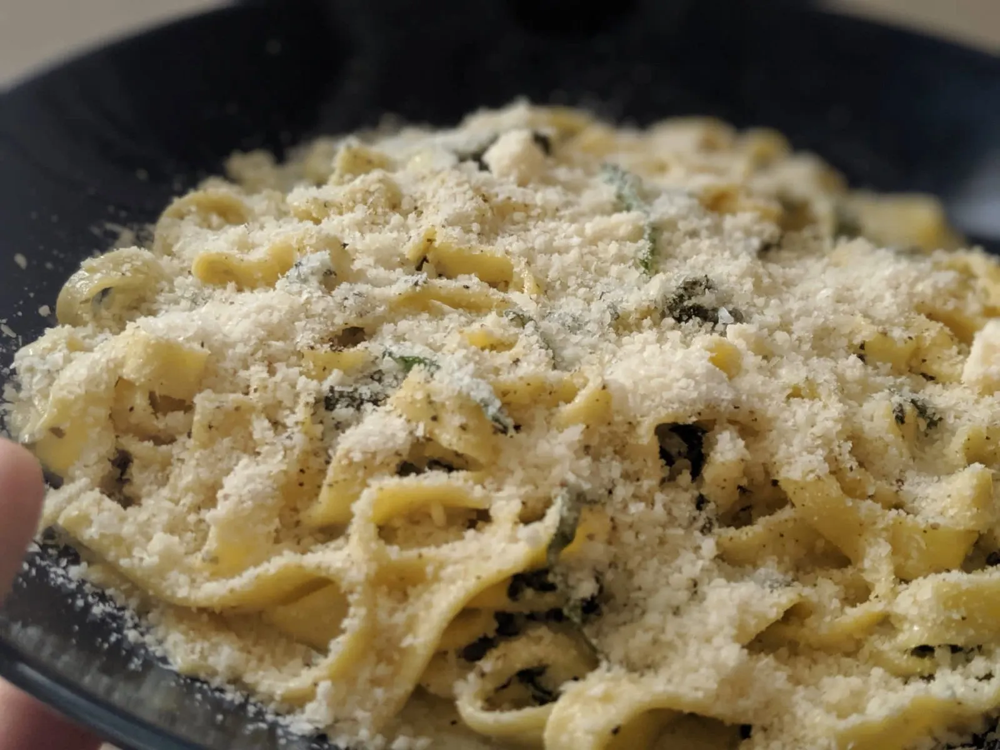
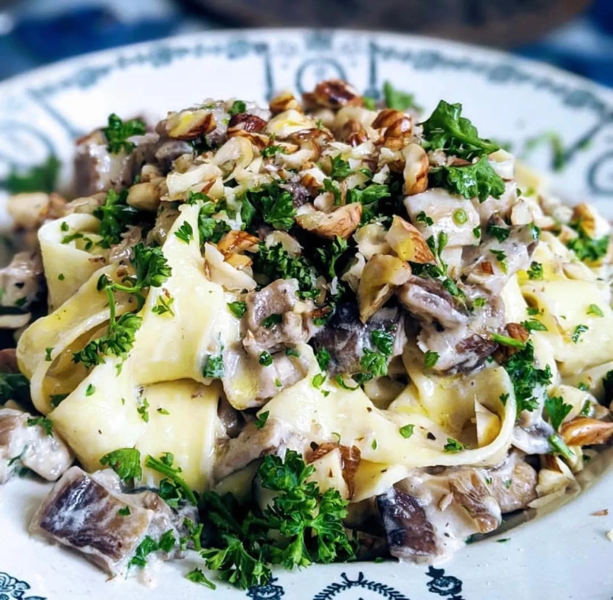
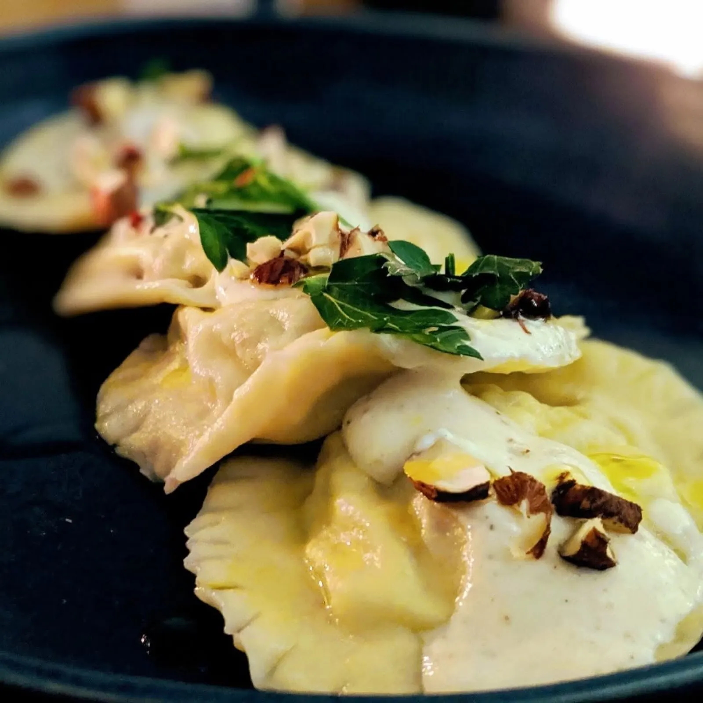
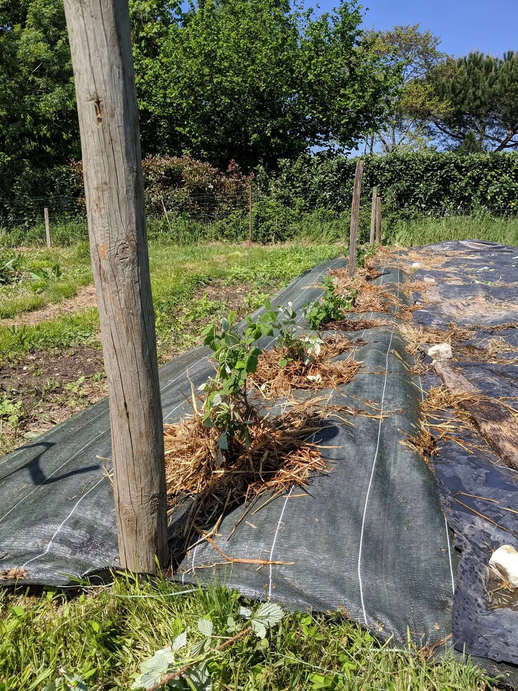
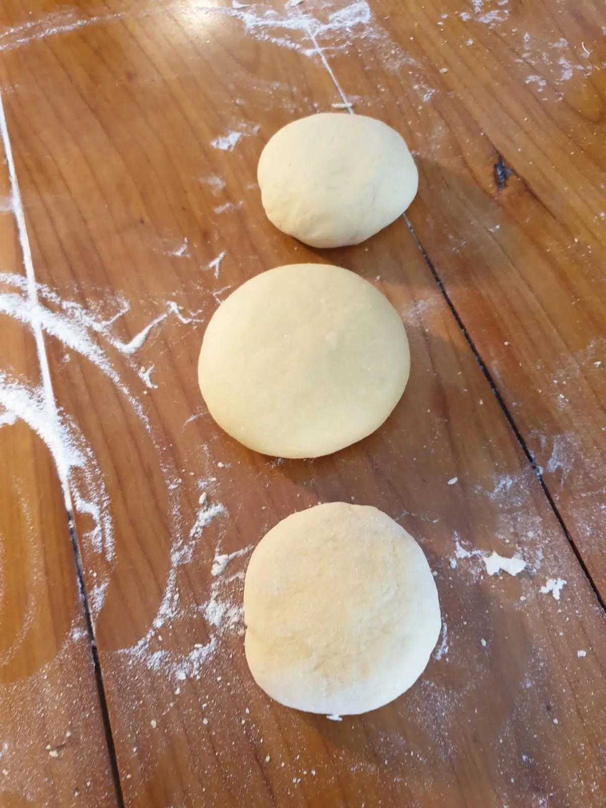
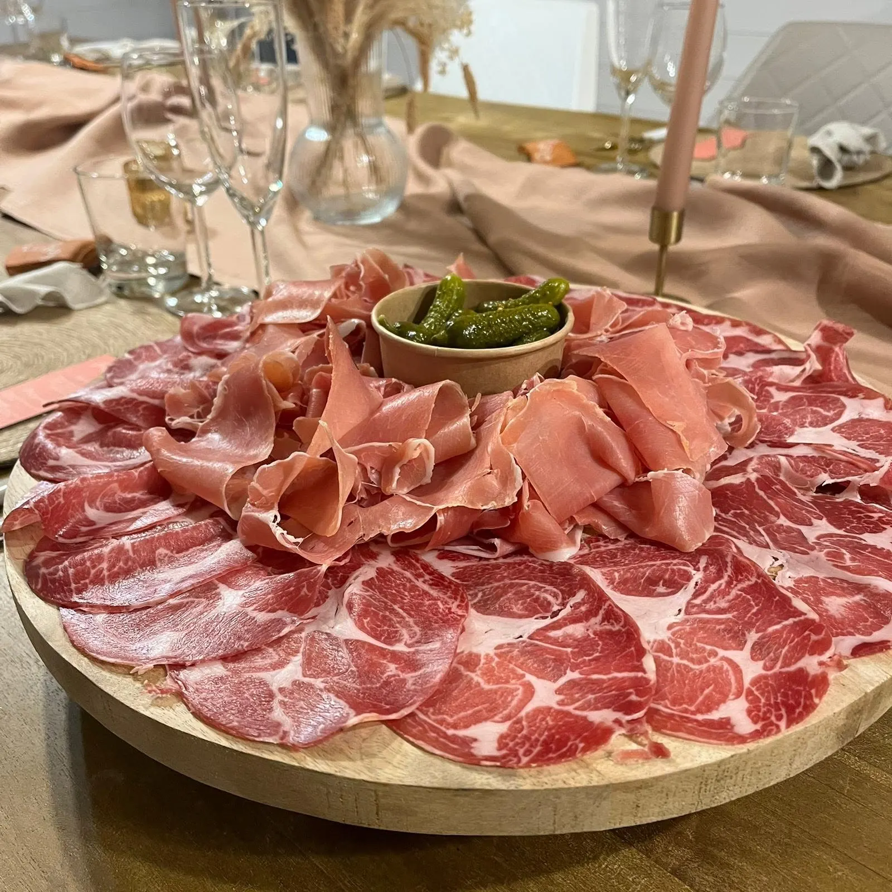
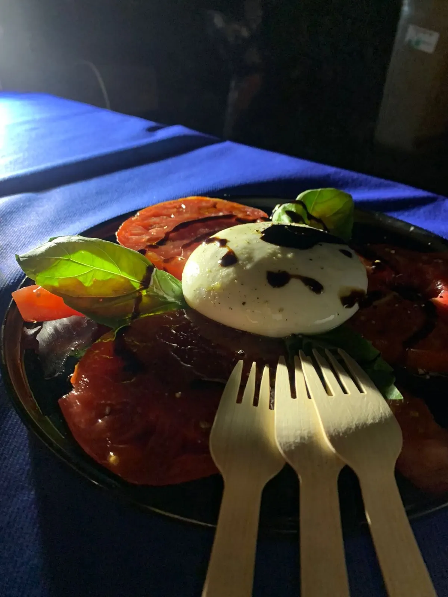
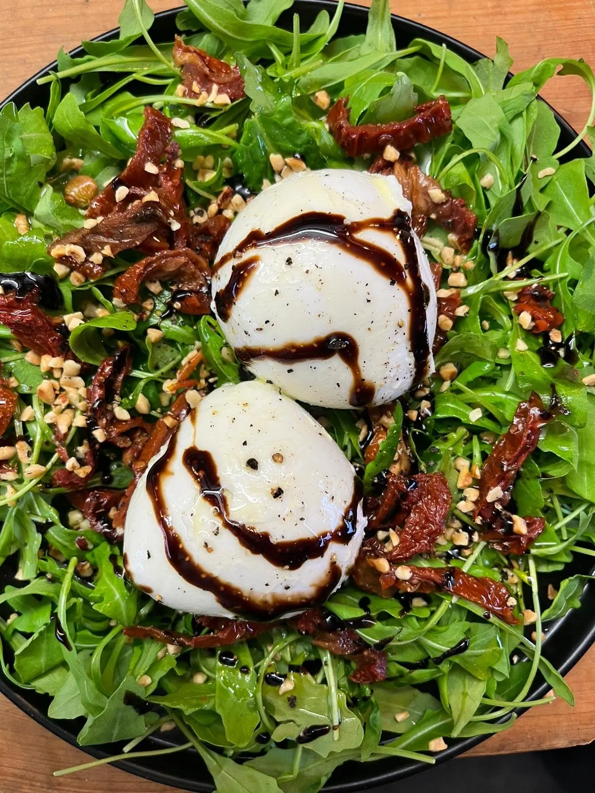

Des pâtes artisanales, locales et maraîchères
La Pastoune est un foodtruck de pâtes fraîches, à Bordeaux. On fait tout nous-mêmes, des pâtes aux légumes qu'on fait pousser : une alternative à la malbouffe, autant pour vous que pour la planète.
5,0 sur 5 sur Google, 61 avis

- Fait maisonPâtes artisanales et locales
- Du potagerLes légumes qu'on fait pousser
- 68Événements privés pendant la saison 2025
- 1 480Repas servis en 15 jours, à l'été 2025
- 5,0 sur 561 avis Google
Du potager à la pâte fraîche
La pâte fraîche, on la fait nous-mêmes. Les légumes, on les fait pousser : ici, les jeunes framboisiers du potager de la Pastoune.

Tagliatelles aux shiitakés et persilladePâtes fraîches, champignons, persil

Raviolis maisonSauce, basilic et noisettes




Le foodtruck à vos événements
Pour les événements privés, La Pastoune diversifie son offre : plateaux à partager, salades, pâtes fraîches. Le camion se déplace avec sa cuisine.
68événements privés pendant la saison 2025
1 480repas servis en 15 jours pour une ligue sportive, été 2025
- Mariages
- Privatisations
- Repas de chantier
Réserver le foodtruck
Une date, un lieu, un nombre de convives : appelez ou écrivez à l'équipe.

- Téléphone
- 06 66 49 51 35
- lapastoune@gmail.com
- Adresse
- 1 rue Buchou
33800 Bordeaux
Horaires
| Lundi | 8 h – 20 h |
|---|---|
| Mardi | 8 h – 20 h |
| Mercredi | 8 h – 20 h |
| Jeudi | 8 h – 20 h |
| Vendredi au dimanche | Fermé |
5,0 sur 5, 61 avis Google